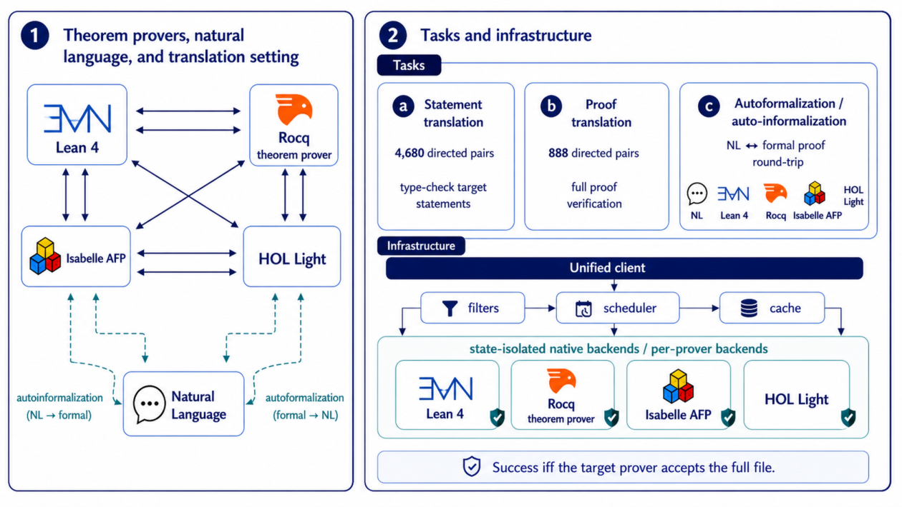
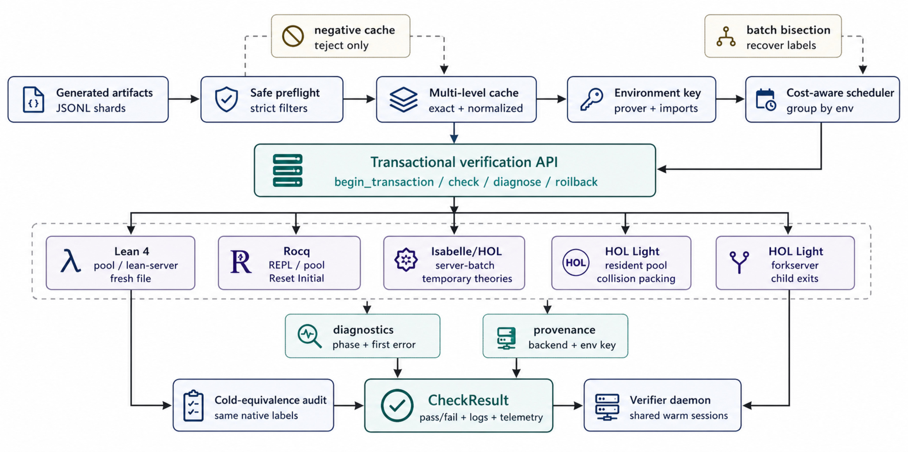

Lean 4 is one of four target and source provers in a cross-ITP translation benchmark, with a Lean-specific BEq semantic equivalence check.
Abstract
Formal theorem proving has emerged as a frontier challenge for machine learning, yet the ecosystem is fragmented: proofs remain siloed across incompatible systems, limiting both training data for learning-based provers and the portability of verified results. We present ITPEval, the first benchmark for evaluating automated formal proof translation across four major ITPs (Lean 4, Rocq, Isabelle, and HOL Light), spanning two distinct logical foundations. Our benchmark comprises 1,560 source files and 6,848 theorems organized into a controlled tier of axiomatized files that isolates foundational translation difficulty, and an ecosystem tier drawn from real libraries that exposes API and proof-style mismatches. We release itpeval, a unified multi-ITP verification infrastructure with state-isolated warm backends that preserve per-artifact native checking semantics. We evaluate both statement and proof translation across five frontier and open-weight LLMs on 12 directed translation pairs: statement translation peaks at 29.1% pass@1 and proof translation at 10.5%; controlled theorems reach 29.7% proof pass@1 versus 5.2% for ecosystem-level translations, confirming that library mismatch is the dominant bottleneck. In addition to pass@k evaluation, a deterministic Lean 4 BEq check establishes equivalence for 54.0% of verified source-to-Lean 4 miniF2F statement translations, showing that native type-checking alone can substantially overestimate semantic fidelity; in an autoformalization/auto-informalization round-trip study, Rocq and HOL Light are easier formalization targets than Lean 4 and Isabelle, while multi-ITP context improves pooled Lean 4 success from 4.8% to 10.6%. Our benchmark, verification infrastructure, and evaluation pipelines are publicly released.
Problem
Formal proofs are siloed across incompatible interactive theorem provers. No benchmark exists for measuring how well statements and proofs can be translated between Lean 4, Rocq, Isabelle, and HOL Light.
Approach
ITPEval is a benchmark of 1,560 source files and 6,848 theorems in two tiers. A controlled tier of self-contained axiomatized files isolates foundational translation difficulty, and an ecosystem tier drawn from real libraries exposes API and proof-style mismatches. A unified multi-ITP verifier with state-isolated warm backends checks every output in the native target prover. A bidirectional definitional-equivalence (BEq) check for Lean 4 targets tests whether verified translations preserve meaning, and a round-trip autoformalization/informalization study is included.

Figure 1 : Overview of ITPEval. The figure summarizes the cross-ITP translation setting, natural-language round-trip tasks, and the unified state-isolated verification infrastructure.

Figure 2 : ITPEval verification infrastructure. Generated artifacts are filtered, cached, scheduled by environment, and checked by prover-specific warm backends while preserving native per-file checking semantics.
Results
Across five LLMs on 12 directed translation pairs, statement translation peaks at 29.1% pass@1 and proof translation at 10.5%. Proof pass@1 is 29.7% on controlled theorems versus 5.2% on ecosystem theorems. Only 54.0% of verified Lean 4 miniF2F statement translations pass BEq, and multi-ITP context raises pooled Lean 4 round-trip success from 4.8% to 10.6%.